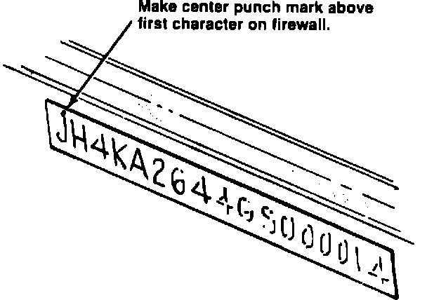

Campaign - Thermostat Replacement
89acura02YEAR MOOEL
1989 LEGEND
May 30, 1989
VIN APPLICATION BULLETIN NO.
See
89-009
VEHICLES AFFECTED

Erratic Temperature Gauge Reading
SYMPTOM
The temperature gauge intermittently reads higher than normal under certain driving conditions.
VEHICLES AFFECTED
Sedan: Up to VIN JH4KA4 . . . KC027201
Coupe: Up to VIN JH4KA3 . . . KC015224
CORRECTIVE ACTION
1. Replace the thermostat with the new type listed under Parts Information. The thermostat rubber mount must be replaced at the same time.
Note: The thermostat should be replaced on all affected vehicles, not just those that come in with this specific complaint. Check all new cars during PDI, and verify this change on all customer cars when they come in for scheduled maintenance.
2. Center punch a completion mark on the firewall above the first character on the VIN, then apply a protective coating of grease to the VIN.
PARTS INFORMATION
Thermostat: 19300-PL2-004
Rubber mount: 19305-PC6-M
WARRANTY CLAIM INFORMATION
In warranty: The normal warranty applies.
Out-of-warranty: Any repair performed after warranty expiration may be eligible for goodwill consideration by the District Service Manager. You must request consideration, and get the DSM's decision, before starting work.
Operation number: 114150
Flat rate time: 0.8 hour
Failed part number: 19300-PH7-014
Defect code: 622
Contention code: J31